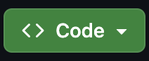
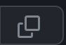
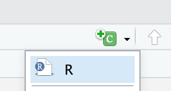

Learn how to create a github account
Download and Install and git
Learn how to set up git with your user name and email.
First, we need to create a GitHub account. Visit the GitHub page to register with a valid email address and create an account for free.
Download and install Git on your local computer. If you do not already have R studio, download R and R studio using this link.
Make sure your settings are up to date by going to Tools –> Global Options –> Terminal –> under the General Tab –> New Terminals Open with: GitBash –> Apply.
Finally, you will need to install Visual Studio Code on your personal computers by downloading Visual Studio Code from this link.
Understanding GitHub terminology can make the GitHub experience easier and more meaningful. Here are some terms that you will come across during this tutorial. Click here for a complete glossary of github terminologies.
This will show you how to create a new repository that will hold your all your data, codes and any other information that you would like to store on GitHub. There are two ways to create a new repository on GitHub:
Create a new ‘folder’ or ‘directory’ on your local computer and then push that into github.
Create a remote repository on Github and then clone that repository into your local computer which can then be updated and pushed back into Github.
For this tutorial, we will be using the second method.
Sign into your Github account
Click on ‘Create new repository’
Enter a description for your repository. (Use EEB_603_GitHub_Tutorial_Day1)
Select your visibility (Public or Private)
Select Initialize this repository with a README. README is a file that contains the full description of the project.
Click Create repository.
Figure 1.1: Create new repository on GitHub
After creating the remote repository as described above, the next step is to clone it to your local environment.
Navigate to the Code tab of the repository on GitHub.
Click the drop down Code button  on the right side of the screen
Copy the URL into your clipboard by clicking the copy icon .
Open RStudio on your local computer.
Click File –> New Project –> Version Control –> Git.
Paste the URL into the Repository URL tab and the Project Name will be automatically filled out for you. If not, you can type in the project name and then click Create Project button.
Figure 1.2: Clone Git Repository with R_project
We now have a local copy of the github repository. Now, let’s add an R Markdown document to the project.
Click on File –> New File –> R markdown.
Save the the file into your Repository folder: Click on File –> Save as
Edit the “Untitled.Rmd” to “Tutorial_on_GitHub_Day_1.Rmd”.
Set up your username and user email in Git. Note that your user name will be attached to your commits and will be seen by your collaborators. Your user email must be the email associated with your GitHub account.
In the Terminal tab in R studio, type the following commands. Ensure that you edit the “Your name here” and “your_email@example.com” (This is the email you used for your GitHub account”) in the codes. Click this link for more details.
Note: You do not need to include the $ sign in your code. It just indicates that you are running this code in the Terminal
$ git config --global user.name "Your name here"
$ git config --global user.email "your_email@example.com"
A typical example would look like this.
$ git config --global user.name "AdeArogundade"
$ git config --global user.email "adedotun.aro@gmail.com"Now let’s configure our Git editor. This is also referred to as a Git client. A Git editor is an integrated development environment. It makes Git more user friendly and gives it a more informative visual representation.
There are other Git clients to choose from, click here to explore other clients. For this tutorial, let’s use Visual Studio Code as our Git editor.
$ git config --global core.editor "Visual Studio Code"Let’s confirm the configurations that we have set
$ git config --global --listAfter running the code above, you should get an output like this. Note: You only have to do configurations once per machine.
adedotunarogunda$ git config --global --list
user.name=AdeArogundade
user.email=adedotun.aro@gmail.com
core.editor=Visual Studio CodeTo learn more about a Git command you can add --help to the end of the command. Similar to the question mark command in R, this will pull up a page with information about the command.
$ git config --helpThis lists were adapted from Sven Buerki’s tutorial page
ls — list items in current directory.
ls -l — list items in current directory and show in long format to see permissions, size, and modification date.
ls -a — list all items in current directory, including hidden files.
ls -F — list all items in current directory and show directories with a slash and executable with a star.
ls dir — list all items in directory dir.
cd dir — change directory to dir.
cd .. — go up one directory.
cd / — go to the root directory.
cd ~ — go to to your home directory.
cd - — go to the last directory you were just in.
pwd — show present working directory.
mkdir dir — make new directory called dir.
rm file1 — remove file1.
rm -r dir1 — remove directory dir1 recursively.
cp file1 file2 — copy file1 to file2.
cp -r dir1 dir2 — copy directory dir1 to dir2 recursively.
mv file1 file2 — move (rename) file1 to file2.
mv file1 ~/file1 — move file1 from the current directory to user’s home directory.
cat file — output the contents of file.
less file — view file with page navigation.
head file — output the first 10 lines of file.
tail file — output the last 10 lines of file.
tail -f file — output the contents of file as it grows, starting with the last 10 lines.
vim file — edit file using vim text editor.
Use the pwd function to check your working directory. We want to make sure that you are working out of the folder that you cloned from Github
$ pwdIn the Terminal console, use the ls command to list the files that are in your working directory. You should see a file named README.md
We are going to edit this file using nano and paste the following sentence inside it.
# This code opens the file up for you
$ nano README.mdnano README.mdcommand.# EEB_603_Tutorial_Fall2023
Bioinformatic Tutorial on how to use GitHub for Reproducible Science.After pasting the text into the window, exit the save and exit the window.
On Windows: Press ctrl+ x + y + Enter
On Mac: Press control + x + y + Enter
Finally, look at the edited README.md file using the cat or head command.
$ cat README.md
$ head README.mdIn order for Git to track changes, we have to commit changes to the repository. The Git command used for committing changes is git commit.
# Prepare all of your files to be added to GitHub
$ git add --all
$ git commit -a -m "First Edits to README.md"
Note:
-a symbolizes that you want to commit the changes from all the files in your repository.
-m is used so we can include a message attached to our commit. Messages are useful if you want to refer back to a previous commit. We wrote “First Edits to README.md” as the message.A branch is an alternative version of your project where you can play around with changes without permanently altering your project.
A branch is where you can test things, try new ideas without the fear of ruining the progress you made on your project. Eventually, if you like your changes, you can merge the branch to your main branch and then update your files. Think of a branch as a ‘fail safe’.
git branch to check if we have any existing branches in our repository.$ git branch
# Here we can see we only have one branch called main. We know we are working on this branch because of the asterisk that is next to it.git branch followed by the branch name. A branch name should have no spaces. In the example below, we will call our new branch version2.$ git branch version2git branch command again to see if you have two.$ git branchgit checkout command to switch to the branch you created$ git checkout version2git branch command again to see if you the asterisk has moved to ‘version2’. That asterisk is a way of Git telling us that we are on the “version2” branch instead of the “main” branch.To show how Git tracks changes, lets make a small change to the README file. Remember when we added “# EEB_603_Tutorial_Fall2023 Bioinformatic Tutorial on how to use GitHub for Reproducible Science.” text to the README document?
Now, let’s make changes to that markdown document by adding your full name to that text.
nano README.md$ nano README.md# EEB_603_Tutorial_Day1
Bioinformatic Tutorial on how to use GitHub for Reproducible Science by Adedotun
Arogundade.After pasting the text into the window, exit the save and exit the window.
On Windows: Press ctrl+ x + y + Enter
On Mac: Press control + x + y + Enter
Before we commit our changes, let’s use the git diff to see the changes in Git and take a look at what we changed.
$ git diff$ git commit -i README.md -m "Second Edits to README.md"
Note:
- the -i argument specificies that we want to commit a specific file. This is unlike the -a argument that we used earlier.git checkout to switch back to the main branch$ git checkout maingit merge to merge version2 to the master branch.$ git merge version2main branch. It should have the edits that you’ve made to the file$ cat README.mdgit branch -d name_of_branch.$ git branch -d version2Here is an example of how you can move files from Git into GitHub.
You remember that we cloned a repository that we made on GitHub into R using R project. However, if you created a local repository using git init, you will need to make an empty repository on your GitHub account. After that you can follow the steps explained below:
Copy the URL of the GitHub repository as explained in Clone the repository with R studio
Use git remote add origin URL to tell Git where to push your files to remotely.
$ git remote add origin "Respository URL"
$ git remote add origin https://github.com/AdeArogundade/EEB_603_Tutorial_Fall2023.git
# If you have been following this tutorial you will get an error message that says "remote origin already already exist".If you created a local repository using git init, use git branch -M main to move everything form the master branch into a main branch. If you have been following this tutorial, you do not need to do this step because you cloned a Repository from GitHub into R project and you have main as your primary branch instead of master.
Now, use git push -u origin main to push our files to GitHub. The -u means upstream.
$ git push -u origin mainEach commit you make in Git comes with a unique SHA (Secure Hashing Algorithm) code associated with the commit. These codes are important in using the version control features in Git.
If you want to revert to a previous version of your project you can do so with the following steps:
Use the git log command line to generate a list of all your previous commits with your attached message.
Copy the SHA code next to the word commit
Then type git reset --hard SHA_code
$ git log
# Press "q" to exit the log window.
$ git reset --hard SHA_code
Note:
Replace the SHA_code with the Hash number of the commit you would like to revert to.If you did that with the first commit of your README.md file, you will notice that it has reverted back to the previous commits that did not include “by Your Fullname” which was introduced in our second commit.
You can connect to GitHub using the Secure Shell Protocol (SSH), which provides a secure channel over an unsecured network. An SSH key is a unique code associated with your machine that can be used to streamline authentication steps.
It is a way to connect your local Git and GitHub account. After configuring an SSH key you will not have to enter your GitHub username and password when using Git and GitHub.
The first step is to check if you have any existing SSH key.
Open the terminal and type in the code below.
$ ls -al ~/.sshCheck the directory listing to see if you already have a public SSH key.
By default, the filenames of supported public keys for GitHub are one of the following.
id_rsa.pub
id_ecdsa.pub
id_ed25519.pub
If you don’t have any one, go ahead and create a new key
Check this GitHub link for more info.
$ ssh-keygen -t rsa -C "your_email@example.com"
Note:
Make sure you replace the "your_email@example.com" with the GitHub email address.You can choose if you want to use a passphrase or not. Hit enter x2 to skip the option, or create a passphrase.
Then, you want to change your directory to where the ssh keys are stored. To do so, type cd ~/.ssh
cat ~/.ssh/id_rsa.pub into the terminal to display the public key and then copy the output.$ cat ~/.ssh/id_rsa.pubpbcopy < ~/.ssh/id_rsa.pub to copy directly into your clipboard.$ pbcopy < ~/.ssh/id_rsa.pubIf you created a passphrase, it is encouraged to ass your SSH Key to ssh-agent so that you will not be prompted for your passphrase each time.
In order to keep this tutorial simple enough, we will not go over this step. If you want to learn more or know how to do this, follow the instructions in this GitHub doc.
Check this Github doc for more info.
By now you should have copied your SSH Key using the command pbcopy < ~/.ssh/id_rsa.pub
Go to your github “Account Settings”.
Click “SSH Keys” on the left.
Click “Add SSH Key” on the right.
Add a label (like “My laptop”) and paste the public key into the big text box.
In a terminal, type the following to test it:
$ ssh -T git@github.comHow to clone a GitHub repository into your local computer using git clone
How to collaborating on project using GithHub
How to make your research reproducible by publishing as website using GitHub.
Follow the steps described in Create a remote repository on GitHub
Sign into your Github account
Click on ‘Create new repository’
Enter a description for your repository. (Use EEB_603_GitHub_Tutorial_Day2.YourInitials e.g EEB_603_GitHub_Tutorial_Day2.AA)
Select your visibility (Public or Private)
Select Initialize this repository with a README. README is a file that contains the full description of the project.
Click Create repository.
Figure 2.1: Create new repository on GitHub
Follow the prompts on Clone the repository with RStudio to clone the repository into your local computer.
We now have a local copy of the github repository. Now, let’s add a R Markdown document to the project.
Click on File –> New File –> R script.
Save the the file into your Repository folder: Click on File – Save as
Edit the “Untitled.R” to “Square.Function_YOURINITIAL.R”. For example, “Square.Function_AA.R”
Copy the this code into the R script titled “Square.Function_YOURINITIAL.R” that is located in your project folder and save it by pressing Ctrl + S or Command + S depending on the type of computer you are using.
square_number <- function(base) {
# Infer square of base and save it into object
sq <- base * base
}Follow this steps to push your code to GitHub from your local computer:
Click on ‘Tools’ –> ‘Version Control’ –> ‘Commit’.
From the pop-up window, select the files that you want to add to GitHub.
It is recommended that you add your files individually, because it will enable you to comment on each file.
This will help you to keep track of each changes that was made to the file at every ‘commit’. It will also allow whoever sees those files on GitHub at first glance will be able to understand what each file does.
In your commit message for the R script, type “User defined function to calculate the square of a number”.
Once you have finished committing all changes, close the window
Click on ‘Push’ to push ALL (the commits you have made) to GitHub
Now check your GitHub page, refresh your GitHub page, and you will see that your repository has been populated with your new branch.
The first step is to give access to your collaborators using either their GitHub username or email address.
Go to your GitHub repository, click on your repository (i.e. the repository you need collaboration on)
Go to ‘settings’,
Under ‘Access’ tab, click on “Collaborators”. GitHub will prompt you for your login password, once you enter your password, click on ‘Add people’
Enter the details of your collaborator, and send the invite
The collaborator will be nudged via email; once the collaborator accepts your invite to collaborate on the repository, you can now collaborate on the repository/project.
Figure 2.2: How to Grant Collaborators Access to your Repository
By now you should be paired with a collaborator and should have access to their project. Check your email for confirmation.
Follow this steps to make changes to an existing code as a collaborator:
Copy the URL of the repository you are collaborating on. Check this section for details on how to copy a repository URL.
Open R Studio, and click on ‘Terminal’,
In order to avoid potential conflict with our project folder, we will be cloning this repository to Desktop
cd to change out of your current directory into the Desktop.$ cd ~/Desktoppwd to check if you are have been moved to the right directory$ pwd$ git clone <URL of your collaborator's repository>Once that is done, check the list of files on your Desktop by typing ls in the Terminal. You should be able to see your collaborator’s project folder titled EEB_603_GitHub_Tutorial_Day2.Collaborators.Initials
Now, move into that folder
$ cd EEB_603_GitHub_Tutorial_Day2.Collaborators.Initials/By now, we should know the meaning of Branch and Main/Master. Check this section, if you need a refresher.
As a collaborator, it is very important to always make your suggestions in a branch and not on the master/main of that project.
$ git branch -a$ git checkout -b function_yourinitials
Note:
This command creates a new branch and changes to the new branch automatically. This is a slightly different from the way we created a branch on Day of this tutorial.
Now if you type `git branch` into the terminal, you see that you are no longer on the main or master, you are now on the branch you createdcode . in the terminal to open Visual Studio. Visual Studio is a text editor that allows you to easily make changes to code. Refer to this section if you are yet to install Visual Studio.$ code .The repository you are working on should now be opened on Visual Studio.
Click on the **“Square.Function_CollaboratorInitial.R”* script that you want to edit.
Notice that this script does not contain a return code which is very important for a function because we would not get any output it.
Therefore, add #Return sq object /n return(sq) to the script so that the edited script will look like this.
square_number <- function(base) {
# Infer square of base and save it into object
sq <- base * base
# Return sq object
return(sq)
}Save the changes you made by typing Ctrl/Command + S
Go to R Terminal and commit your changes, and then upload to GitHub using this command:
$ git add Square.Function_CollaboratorInitial.R
# Commit changes, using git commit -m “comment (in branchName)”
$ git commit -m "YourName adding the return function to the code so that we can see the output of the User Defined Function (in function_yourinitials)."
# Push your branch “function_yourinitials” with the edited code to GitHub of your collaborator using git push
$ git push --set-upstream origin function_yourinitialsNow, if you go to your GitHub page, and click on your own repository which is the the repository name with yourinitials (EEB_603_GitHub_Tutorial_Day2.YourInitials), you can now see that the branch created by your collaborator (function_collaboratorinitials) has been added.
$ cd /path/to/your/EEB_603_GitHub_Tutorial_Day2.YourInitials/$ git fetch origin
$ git checkout -b function_collaboratorinitials origin/function_collaboratorinitials
$ git merge main$ git checkout main
$ git merge --no-ff function_collaboratorinitials
$ git push origin mainGitHub Pages are public webpages hosted and easily published through GitHub. Check this documentation for details.
For this tutorial, we will create an example page that we will publish to the web.
Click on File –> New File –> R markdown.
Save the the file into your Repository folder: Click on File – Save as
Edit the “Untitled.Rmd” to “index.Rmd”.
Open the Markdown document
Press Ctrl + A or Command + A to highlight and delete everything in the file.
Copy the YAML code below into the markdown document
---
title: "EEB 603 Bioinformatics Tutorial"
subtitle: "An Example GitHub Webpage - Intro to Plotting"
author: "Your Full Name"
date: "`r Sys.Date()`" # Instead of writing the date, we use an inline code of R for it to update the code with the system's date each time you knit
output:
bookdown::html_document2: #We specified that we want to use the html_document2 function from bookdown to avoid any ambiguity
toc: TRUE
# bookdown::pdf_document2: #### # I added hashtag at the beginning of this code because I dont have latex installed on the computer.
# toc: TRUE
link-citations: yes # This function is used to link your in-text citations so that when clicked it will redirect readers to the full-text references
fontsize: 12pt
---Use the insert button  in R studio
Use a keyboard shortcut
On Mac: Cmd + Option + I
On PC : Ctrl + Alt + I
We are using the gapminder data in the gapminder R package. Type ??gapminder in the R Console for more information.
## Load the packages
# install.packages('gapminder')
library(gapminder)
head(gapminder)
# Base plot
plot(x = gapminder$gdpPercap, y = gapminder$lifeExp)
# The default graph is scatter plot. However, you can
# specify your choice of graph using an argument code
plot(x = gapminder$gdpPercap, y = gapminder$lifeExp, type = "line")
# the code above will produce a line graph.
# You can also use a boxplot to plot your data.
boxplot(gapminder$lifeExp ~ gapminder$continent)
# The syntax '~' above is used for several things. In the
# code above it reads 'Life expentancy 'as determined' by
# Continent'
# It is important to also know that box plot work when one
# of the data type is a categorical data
# We can also make histogram, which is used to see the
# distribution of a data
hist(gapminder$lifeExp, col = "pink")
# Notice in the code above that there is an argument 'col'
# which helps to add color to the graph.
# GGPLOT is much cleaner and better to create graphs for
# publications
# install.packages('ggplot')
library(ggplot2)
ggplot(data = gapminder, mapping = aes(x = gdpPercap, y = lifeExp))
# The argument 'mapping' helps to create a template where
# our data will be plotted Notice that, the '$' is not used
# to call out the data in a dataset, this is because of the
# 'aes' which tell the computer to look for the vectors
# inside the data 'gapminder' that was written before it.
# The code above doesn't include any graph, it sets the
# stage for the graphs. 'gg' in 'ggplot' stands for
# 'grammar of graphics'. In order to continue to use the
# 'template' we add a '+' sign after the code. This tells
# the computer that everything that will come after should
# be on it.
ggplot(data = gapminder, mapping = aes(x = gdpPercap, y = lifeExp)) +
geom_point()
# geom_points() helps to add scatter plot geom_line helps
# to add line graphs
ggplot(data = gapminder, mapping = aes(x = gdpPercap, y = lifeExp)) +
geom_line()
# To determine how something has changed overtime
ggplot(data = gapminder, mapping = aes(x = year, y = lifeExp)) +
geom_line()
# Change overtime by country will include an additional
# argument
ggplot(data = gapminder, mapping = aes(x = year, y = lifeExp,
by = country)) + geom_line()
# You can add color by country, by using the function
# 'color='
ggplot(data = gapminder, mapping = aes(x = year, y = lifeExp,
by = country, color = continent)) + geom_line()
ggplot(data = gapminder, mapping = aes(x = gdpPercap, y = lifeExp)) +
geom_point()
# We can rescale our x-axis for. This is helpful if you
# want to see your points more clearly
ggplot(data = gapminder, mapping = aes(x = gdpPercap, y = lifeExp)) +
geom_point() + scale_x_log10()
# Now our data is more dispersed because we have enlarged
# the scale.
# We can also change the transparency which is known as the
# alpha value
ggplot(data = gapminder, mapping = aes(x = gdpPercap, y = lifeExp)) +
geom_point(alpha = 0.5) + scale_x_log10()
# When you run the code above, you will notice that the
# plot are more transparent and you can see more data
# clearly
# How TO ADD A SMOOTH FIT OR BEST FIT LINE ACROSS A GRAPH
# i.e a line that is closes to all the data
ggplot(data = gapminder, mapping = aes(x = gdpPercap, y = lifeExp)) +
geom_point(alpha = 0.5) + scale_x_log10() + geom_smooth(method = "lm")
# In the code above, we added, a linear model line into the
# graph
# We can change the color and size of the line.
ggplot(data = gapminder, mapping = aes(x = gdpPercap, y = lifeExp)) +
geom_point(alpha = 0.5) + scale_x_log10() + geom_smooth(method = "lm",
color = "red", size = 3)
# HOW TO CREATE A SUBSET FROM A DATA E.G GAPMINDER
# Let's create a new data set that includes all the
# information of America in gapmider
americas <- gapminder[gapminder$continent == "Americas", ]
# Important notice are the use of double equal to sign.
# Also, the comma at the end of 'Americas' was added to
# tell the computer that we need all the columns in the row
# 'Americas'.
americas
head(americas)
# HOW TO MAKE SMALL MULTIPLES OF DATA
# Using the subset 'americas'
ggplot(data = americas, mapping = aes(x = year, y = lifeExp)) +
geom_line() + facet_wrap(~country)
# You can see that we have created a subset of life
# expectancy against year in countries in america. One
# thing we should note is that text of the years on x axis
# and the values on y axis are not that clear. We can
# remedy this using the function 'theme'
ggplot(data = americas, mapping = aes(x = year, y = lifeExp)) +
geom_line() + facet_wrap(~country) + theme(axis.text.x = element_text(angle = 45))
# Now the years are not overlapping with each other.
# Also, the X and Y axis can be renamed on the graph using
# 'xlab' and 'ylab' functions.
ggplot(data = americas, mapping = aes(x = year, y = lifeExp)) +
geom_line() + facet_wrap(~country) + theme(axis.text.x = element_text(angle = 45)) +
xlab("Year")
# Observe that the X-axis has been change from 'year' to
# 'Year'
ggplot(data = americas, mapping = aes(x = year, y = lifeExp)) +
geom_line() + facet_wrap(~country) + theme(axis.text.x = element_text(angle = 45)) +
xlab("Year") + ylab("LifeExpectancy")
# Also the y axis has been change from 'lifeExp' to
# 'LifeExpectancy'
# HOW TO SAVE A FIGURE
# You save a figure using the 'ggsave' function. However,
# before you do that you will have to make the figure into
# an object that will be saved in the environment. Here I
# will make it object 'p' in my environment
p <- ggplot(data = americas, mapping = aes(x = year, y = lifeExp)) +
geom_line() + facet_wrap(~country) + theme(axis.text.x = element_text(angle = 45)) +
xlab("Year") + ylab("LifeExpectancy")
# Now I can save it.
ggsave(filename = "./AmericasLifeExp.png", plot = p, width = 20,
height = 15, dpi = 300, units = "cm")
# Now, it is saved in your project directory. The ggsave
# function will help you meet the specific journal
# requirements for each publication.$ pwd$ cd /path/to/your/EEB_603_GitHub_Tutorial_Day2.YourInitials/main branch.$ git branchnano command to create the yaml file$ nano _site.ymlname:"EEB 603 Tutorial"
output_dir:"."
navbar:title:"An Example GitHub Webpage - Intro to Plotting"
left:-text:"Home"
href:index.htmlindex.Rmd file to create index.html which is the file that will be published.$ git add --all
$ git commit -a -m "Updates"
$ git push -u origin mainFollow this GitHub documentation to publish the website.
Click on Settings
Click on Page in the “Code and automation” section
Select “Deploy from a branch” under Source
Choose the main branch as the publishing source.
Save your options and check your website at https://YourGitHubUserName.github.io/EEB_603_GitHub_Tutorial_Day2.YourInitials/
README files are a quick and simple way for other users to learn more about your project. Wikis on GitHub help you present in-depth information about your project in a useful way. Check this link for more information about wiki.
Licensing your work is very important. Check the class website for more information on license.
Citations of all R packages used to generate this report.
[1] J. Allaire, Y. Xie, C. Dervieux, et al. rmarkdown: Dynamic Documents for R. R package version 2.23. 2023. https://CRAN.R-project.org/package=rmarkdown.
[2] S. M. Bache and H. Wickham. magrittr: A Forward-Pipe Operator for R. R package version 2.0.3. 2022. https://CRAN.R-project.org/package=magrittr.
[3] C. Boettiger. knitcitations: Citations for Knitr Markdown Files. R package version 1.0.12. 2021. https://github.com/cboettig/knitcitations.
[4] J. Cheng, C. Sievert, B. Schloerke, et al. htmltools: Tools for HTML. R package version 0.5.5. 2023. https://CRAN.R-project.org/package=htmltools.
[5] R. Francois and D. Hernangómez. bibtex: Bibtex Parser. R package version 0.5.1. 2023. https://CRAN.R-project.org/package=bibtex.
[6] Y. Qiu. prettydoc: Creating Pretty Documents from R Markdown. R package version 0.4.1. 2021. https://github.com/yixuan/prettydoc.
[7] R Core Team. R: A Language and Environment for Statistical Computing. R Foundation for Statistical Computing. Vienna, Austria, 2022. https://www.R-project.org/.
[8] K. Ren and K. Russell. formattable: Create Formattable Data Structures. R package version 0.2.1. 2021. https://CRAN.R-project.org/package=formattable.
[9] H. Wickham, J. Bryan, M. Barrett, et al. usethis: Automate Package and Project Setup. R package version 2.2.2. 2023. https://CRAN.R-project.org/package=usethis.
[10] H. Wickham, R. François, L. Henry, et al. dplyr: A Grammar of Data Manipulation. R package version 1.1.2. 2023. https://CRAN.R-project.org/package=dplyr.
[11] H. Wickham, J. Hester, W. Chang, et al. devtools: Tools to Make Developing R Packages Easier. R package version 2.4.5. 2022. https://CRAN.R-project.org/package=devtools.
[12] Y. Xie. bookdown: Authoring Books and Technical Documents with R Markdown. Boca Raton, Florida: Chapman and Hall/CRC, 2016. ISBN: 978-1138700109. https://bookdown.org/yihui/bookdown.
[13] Y. Xie. bookdown: Authoring Books and Technical Documents with R Markdown. R package version 0.36. 2023. https://CRAN.R-project.org/package=bookdown.
[14] Y. Xie. Dynamic Documents with R and knitr. 2nd. ISBN 978-1498716963. Boca Raton, Florida: Chapman and Hall/CRC, 2015. https://yihui.org/knitr/.
[15] Y. Xie. “knitr: A Comprehensive Tool for Reproducible Research in R”. In: Implementing Reproducible Computational Research. Ed. by V. Stodden, F. Leisch and R. D. Peng. ISBN 978-1466561595. Chapman and Hall/CRC, 2014.
[16] Y. Xie. knitr: A General-Purpose Package for Dynamic Report Generation in R. R package version 1.43. 2023. https://yihui.org/knitr/.
[17] Y. Xie, J. Allaire, and G. Grolemund. R Markdown: The Definitive Guide. Boca Raton, Florida: Chapman and Hall/CRC, 2018. ISBN: 9781138359338. https://bookdown.org/yihui/rmarkdown.
[18] Y. Xie, C. Dervieux, and E. Riederer. R Markdown Cookbook. Boca Raton, Florida: Chapman and Hall/CRC, 2020. ISBN: 9780367563837. https://bookdown.org/yihui/rmarkdown-cookbook.
[19] H. Zhu. kableExtra: Construct Complex Table with kable and Pipe Syntax. R package version 1.3.4. 2021. https://CRAN.R-project.org/package=kableExtra.
Version information about R, the operating system (OS) and attached or R loaded packages. This appendix was generated using sessionInfo().
# Load and provide all packages and versions
sessionInfo()## R version 4.2.1 (2022-06-23 ucrt)
## Platform: x86_64-w64-mingw32/x64 (64-bit)
## Running under: Windows 10 x64 (build 22000)
##
## Matrix products: default
##
## locale:
## [1] LC_COLLATE=English_United States.utf8
## [2] LC_CTYPE=English_United States.utf8
## [3] LC_MONETARY=English_United States.utf8
## [4] LC_NUMERIC=C
## [5] LC_TIME=English_United States.utf8
##
## attached base packages:
## [1] stats graphics grDevices utils datasets methods base
##
## other attached packages:
## [1] vembedr_0.1.5 DT_0.30 kfigr_1.2.1
## [4] formatR_1.14 devtools_2.4.5 usethis_2.2.2
## [7] bibtex_0.5.1 knitcitations_1.0.12 htmltools_0.5.5
## [10] prettydoc_0.4.1 magrittr_2.0.3 dplyr_1.1.2
## [13] kableExtra_1.3.4 formattable_0.2.1 bookdown_0.36
## [16] rmarkdown_2.23 knitr_1.43
##
## loaded via a namespace (and not attached):
## [1] httr_1.4.6 sass_0.4.6 pkgload_1.3.3 jsonlite_1.8.7
## [5] viridisLite_0.4.2 bslib_0.5.0 assertthat_0.2.1 shiny_1.7.5.1
## [9] highr_0.10 yaml_2.3.7 remotes_2.4.2.1 sessioninfo_1.2.2
## [13] pillar_1.9.0 backports_1.4.1 glue_1.6.2 digest_0.6.33
## [17] promises_1.2.1 rvest_1.0.3 RefManageR_1.4.0 colorspace_2.1-0
## [21] httpuv_1.6.12 plyr_1.8.8 pkgconfig_2.0.3 purrr_1.0.1
## [25] xtable_1.8-4 scales_1.2.1 webshot_0.5.5 processx_3.8.2
## [29] svglite_2.1.2 later_1.3.1 timechange_0.2.0 tibble_3.2.1
## [33] generics_0.1.3 ellipsis_0.3.2 cachem_1.0.8 cli_3.6.1
## [37] crayon_1.5.2 mime_0.12 memoise_2.0.1 evaluate_0.21
## [41] ps_1.7.5 fs_1.6.2 fansi_1.0.4 xml2_1.3.5
## [45] pkgbuild_1.4.2 profvis_0.3.8 tools_4.2.1 prettyunits_1.1.1
## [49] lifecycle_1.0.3 stringr_1.5.0 munsell_0.5.0 callr_3.7.3
## [53] compiler_4.2.1 jquerylib_0.1.4 systemfonts_1.0.4 rlang_1.1.1
## [57] rstudioapi_0.15.0 htmlwidgets_1.6.2 crosstalk_1.2.0 miniUI_0.1.1.1
## [61] R6_2.5.1 lubridate_1.9.2 fastmap_1.1.1 utf8_1.2.3
## [65] stringi_1.7.12 Rcpp_1.0.11 vctrs_0.6.3 tidyselect_1.2.0
## [69] xfun_0.39 urlchecker_1.0.1